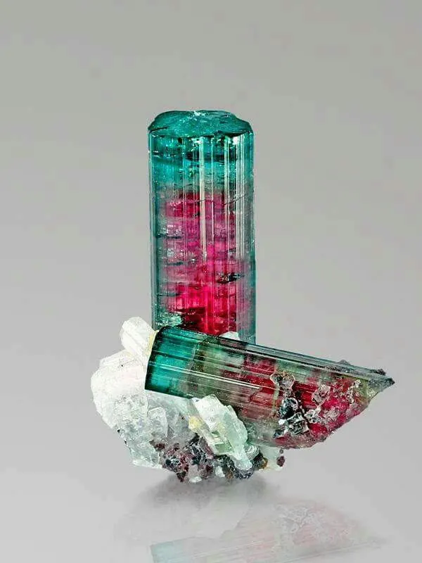

西瓜碧璽與帕拉伊巴：碧璽的雙面人生
同一顆石頭，外皮是綠的、內心是粉的——西瓜碧璽把「雙面人生」演成了寶石。

核心定義
碧璽（tourmaline）是顏色最豐富的寶石家族，而其中兩個極端最令人難忘：西瓜碧璽（watermelon tourmaline）橫切面外綠內粉，像切開的西瓜；帕拉伊巴碧璽（Paraíba tourmaline）則藍得像霓虹燈——一種不屬於自然的「電光藍」。
西瓜碧璽的綠來自錳與鐵，粉紅來自錳；帕拉伊巴的藍綠則主要來自微量銅元素——它於 1989 年在巴西帕拉伊巴州首度發現，從此成為碧璽界的傳奇。
特徵與分類
| 品種 | 顏色 | 致色元素 | 產地 | 稀缺度 |
|---|---|---|---|---|
| 西瓜碧璽 | 外綠內粉 | 錳、鐵 | 巴西、非洲 | 中高 |
| 帕拉伊巴碧璽 | 霓虹藍綠 | 銅、錳 | 巴西、莫三比克、奈及利亞 | 極高 |
| 普通碧璽 | 多色 | 多種 | 全球 | 高產量 |
帕拉伊巴的「霓虹感」來自銅離子在碧璽中的吸收光譜——它吸收紅光與黃光，讓剩下的藍綠光格外「亮」。頂級帕拉伊巴每克拉價格可與頂級紅寶石並駕齊驅。
科學原理
西瓜碧璽的雙色成因是「晶體生長過程的環境變化」：碧璽晶體沿 c 軸生長，早期富錳（粉紅芯）、晚期混入鐵（綠色殼）——生長條件改變，顏色就分層。橫切才見「西瓜」，縱切則是一端粉一端綠的雙色碧璽。
帕拉伊巴的藍則是非典型的：銅離子在碧璽中極少見，全球僅少數礦床含銅碧璽——這正是它「稀有」的地質學根源。加熱處理（低溫）能讓部分含銅碧璽由紫調轉為藍調，屬於業界接受的優化。
鑑定與鑑別方法
- 看雙色漸層：西瓜碧璽橫切應有清晰的綠→粉過渡
- 看霓虹感：帕拉伊巴的藍有「電光」般的亮度
- 折射率：碧璽約 1.62–1.64，雙折射明顯
- 偏光鏡：碧璽為一軸晶，四明四暗
- 證書：高價帕拉伊巴要求產地與處理說明
市場行情與保養建議
行情：西瓜碧璽 2026 年零售參考，品質良好者每克拉新台幣數千至數萬元；帕拉伊巴則從每克拉新台幣數萬起跳，頂級巴西產霓虹藍可達每克拉數十萬元——產地與顏色主導價格。
提醒：帕拉伊巴仿品與優化層出不窮——「含銅碧璽」與「帕拉伊巴」在商業上不同，買前認證書。價格僅供參考，非投資建議。
常見誤區
雙色碧璽很多（一端粉一端綠），但只有「橫切面同心綠包粉」才叫西瓜碧璽——切法決定稱謂。
帕拉伊巴特指含銅且具霓虹感的藍綠碧璽——普通藍碧璽（鐵致色）與它價格差數十倍。
冷知識
它由巴西礦工 Heitor Barbosa 在帕拉伊巴州一座小山丘上挖出——短短幾年，就從無名小礦變成碧璽之王。
慈禧生前收藏大量粉紅碧璽，死後也以碧璽陪葬——她愛的「碧璽」，就是西瓜碧璽的粉紅親戚。
反直覺觀點
多數帕拉伊巴的真實色調是藍綠色——因為銅吸收光譜留下的光同時含藍與綠。市場上最貴的，是「藍到綠意幾乎消失」的極致霓虹藍。
西瓜碧璽的綠色外殼常有裂隙與雜質，切割時常被拋棄——真正值錢的是內芯的粉紅與「完整西瓜」的稀有性。